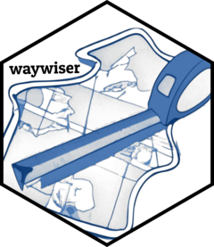

Predict from a ww_area_of_applicability
Source: R/area_of_applicability.R
predict.ww_area_of_applicability.RdPredict from a ww_area_of_applicability
Usage
# S3 method for class 'ww_area_of_applicability'
predict(object, new_data, ...)Value
A tibble of predictions, with two columns: di, numeric, contains the
"dissimilarity index" of each point in new_data, while aoa, logical,
contains whether a row is inside (TRUE) or outside (FALSE) the area of
applicability.
Note that this function is often called using
terra::predict(), in which case aoa will be converted to numeric
implicitly; 1 values correspond to cells "inside" the area of applicability
and 0 corresponds to cells "outside" the AOA.
The number of rows in the tibble is guaranteed
to be the same as the number of rows in new_data. Rows with NA predictor
values will have NA di and aoa values.
Details
The function computes the distance indices of the new data and whether or not they are "inside" the area of applicability.
See also
Other area of applicability functions:
ww_area_of_applicability()
Examples
if (FALSE) { # rlang::is_installed("vip")
library(vip)
train <- gen_friedman(1000, seed = 101) # ?vip::gen_friedman
test <- train[701:1000, ]
train <- train[1:700, ]
pp <- stats::ppr(y ~ ., data = train, nterms = 11)
metric_name <- ifelse(
packageVersion("vip") > package_version("0.3.2"),
"rsq",
"rsquared"
)
importance <- vip::vi_permute(
pp,
target = "y",
metric = metric_name,
pred_wrapper = predict,
train = train
)
aoa <- ww_area_of_applicability(y ~ ., train, test, importance = importance)
predict(aoa, test)
}